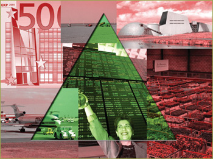
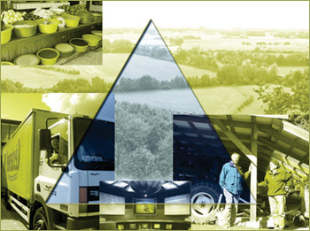
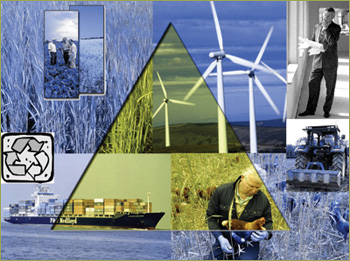
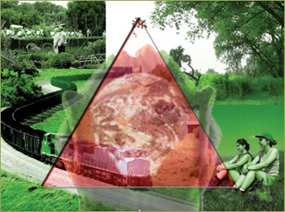

Models are based on assumptions. These assumptions are carefully designed in
order to approach reality as closely as possible. There are 16 topics for which
assumptions are made. For each topic the assumptions are developed for the three
time slices (2010, 2020, 2030).
The 16 topics are: countries; population; macro-economic growth; trade arrangements; trade/WTO; consumer preferences; domestic support in agriculture; nature (EU); less favoured areas; permanent pasture; restrictions on expansion of fruit and vegetables; arable; energy crops; abandoned land area; environmental legislation, public health, animal welfare; agrotechnology; erosion risk; land conversion policy.
The assumptions that are made in Eururalis 2.0 for the coremodels, the metamodels and the policy options are presented here for each scenario.
|  A1: Global Economy |
 A2: Continental Market |
|
|  B1: Global Cooperation |
 B2: Regional Communities |